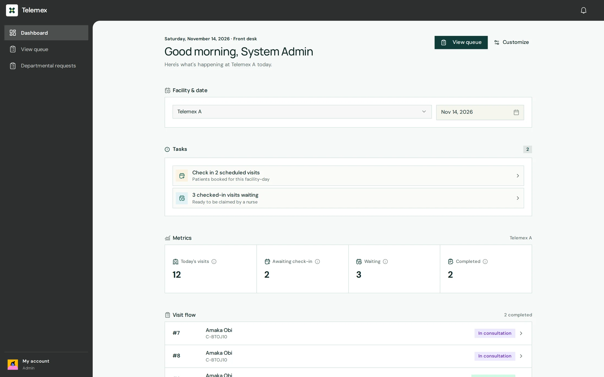

Solutions
Built for the people
who run care.
One record, four very different working days. Telemex gives each team the view it needs without giving anyone else’s work away.

Nobody scrolls past another department’s work to find their own.
Choose a seat
Four working days,
one record.
The same patient appears in every view. What changes is what each team is allowed to see and do.
Everything needed to move care forward.
The consultation opens with context already loaded: problems, medications, allergies, alerts and recent results. Documentation stays inside the encounter.
A bench list that knows the patient.
Requests arrive with identity, priority and context attached. Specimens are tracked from collection to verification, and release is a named act.
A platform your hospital can govern.
See patient flow, department worklists, enabled modules and audit attribution in one operating picture, and know exactly what is live.
Revenue that traces back to care.
Invoices come from encounters and orders rather than a parallel ledger, so a query about a charge can be answered in the chart.
A day in the hospital
The same patient,
six moments.
No step in this sequence asks for information the hospital already holds.
- 08:05
Front desk
The patient is identified once and matched to an existing record. Demographics confirm rather than re-enter.
- 08:20
Nursing
Vitals and intake are recorded and appear in the chart before the clinician opens it.
- 08:45
Consultation
History, examination, coded diagnosis and plan are documented in one pass, with orders attached.
- 09:30
Laboratory
The request is on the bench with priority and identity. Specimen state is recorded as it moves.
- 11:10
Verification
A named sign-off releases the result, which returns to the same chart.
- 11:40
Finance
Invoice lines are generated from the encounter and the test, then reconciled at day close.
Bring your own
working day.
Show us the handovers that frustrate your teams most. We’ll show where the record already answers them.